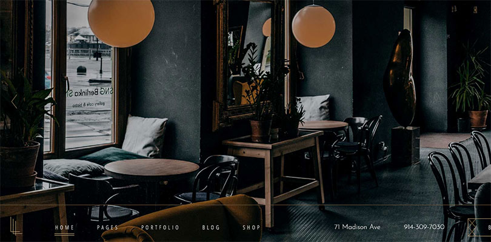
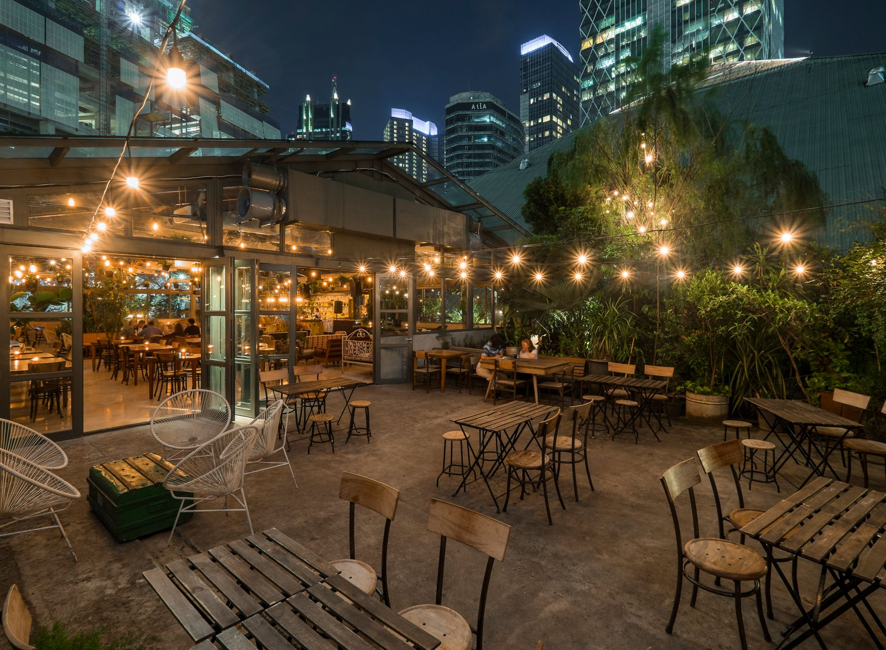
Interior cafe adalah desain dan tata letak yang digunakan dalam sebuah kafe untuk menciptakan suasana yang nyaman, menarik, dan menyenangkan bagi pengunjung. Desain interior kafe penting karena dapat mempengaruhi suasana hati dan kenyamanan pengunjung, serta mencerminkan identitas dan konsep kafe tersebut. Cafe "Santai Senja" memiliki suasana yang nyaman dimana di cafe ini menyediakan pilihan tempat yaitu outdoor dan indoor dengan interior yang unik.
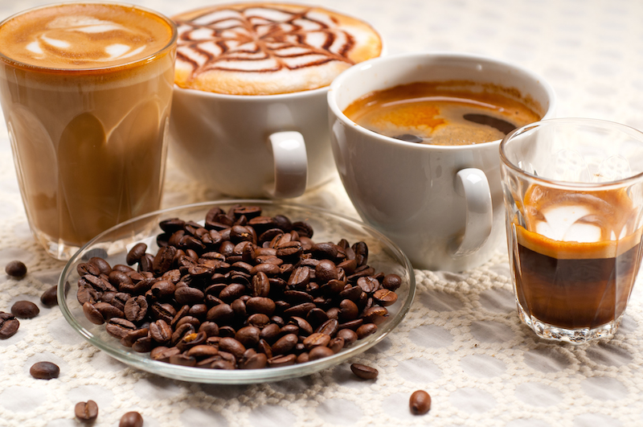
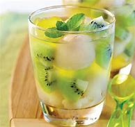
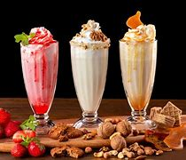
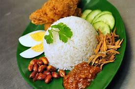
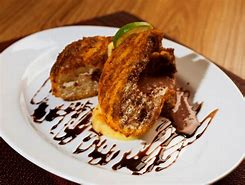
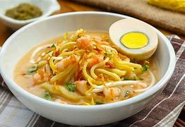
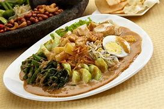
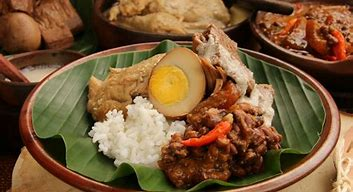
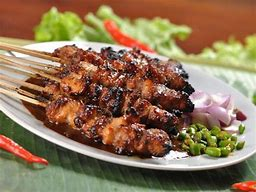
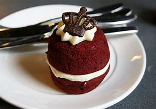
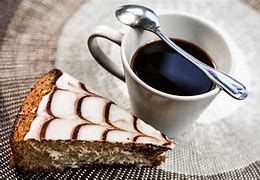
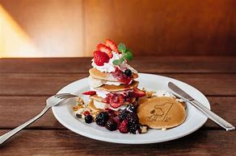
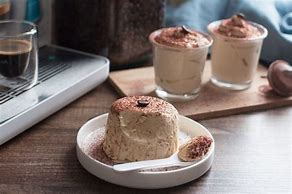
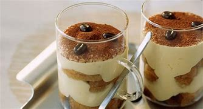
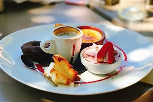
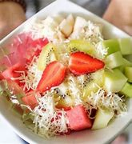
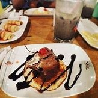
Menu pada cafe adalah daftar makanan dan minuman yang ditawarkan kepada pengunjung. Menu tersebut biasanya mencakup berbagai pilihan yang sesuai dengan konsep dan tema cafe, serta selera target pasar. Menu-menu yang ada pada cafe ini sangat beragam, dimana cafe ini menyediakan makanan, minuman, dan juga dessert yang enak.
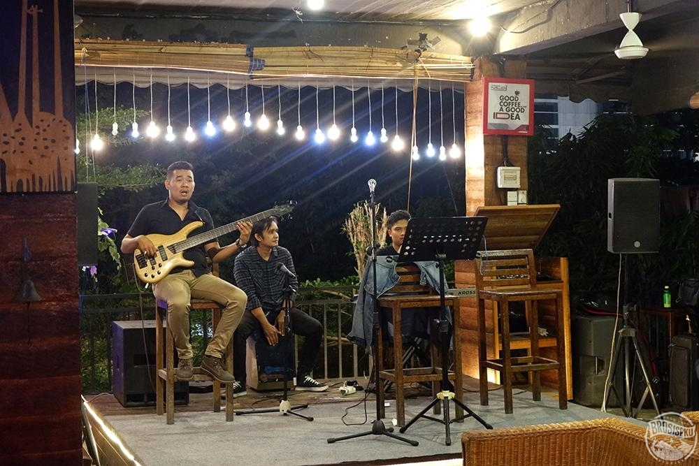
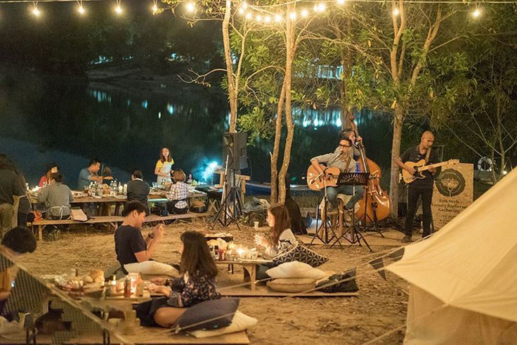
>
Live music pada cafe adalah salah satu cara untuk menarik pengunjung dan menciptakan suasana yang menyenangkan dan interaktif. Penampilan musik langsung dapat memberikan pengalaman yang berbeda dan menambah daya tarik kafe tersebut. Daya tarik sebuah cafe tidak hanya dari interior dan menunya saja. Tak jarang pelanggan datang karena pertunjukan seni yang kerap diadakan disana seperti live music. Tempat live music yang asyik untuk nongkrong, jadi salah satu hiburan cafe ini yaitu kita dapat menyaksikan live music yang sangat keren.

Siapa nih yang suka ngetik pekerjaan kantor sambil santai di sebuah cafe? Kini, work from cafe sudah menjadi hal yang lumrah di kalangan masyarakat, khususnya bagi para pekerja yang sedang diburu deadline dan ingin menyelesaikannya di tempat yang nyaman. Selain rumah, cafe bisa menjadi tempat yang cozy untuk kamu mengerjakan pekerjaan kantor atau bahkan mengadakan meeting dengan kolega. Biasanya cafe untuk kerja ini sudah dilengkapi dengan fasilitas yang menunjang para pekerja agar bisa nyaman melakukan pekerjaan mereka di cafe. Beberapa fasilitas tersebut meliputi wifi yang kencang, stop kontak di setiap meja, toilet yang bersih, mushola untuk beribadah, hingga co working space jika ingin mengadakan meeting atau rapat kecil. Cafe untuk kerja sebenarnya juga bisa diperuntukkan bagi mahasiswa yang ingin nugas sambil nongkrong bersama teman-teman. Dengan adanya cafe di Jakarta untuk wfc ini tentu sangat memudahkan para pekerja maupun mahasiswa yang bisa mengerjakan tugasnya di mana saja tapi bosan dengan suasana rumah. Cafe "Santai Senja" untuk wfc bisa menjadi alternatif pilihannya.